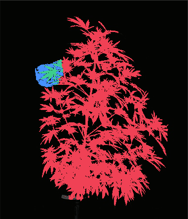


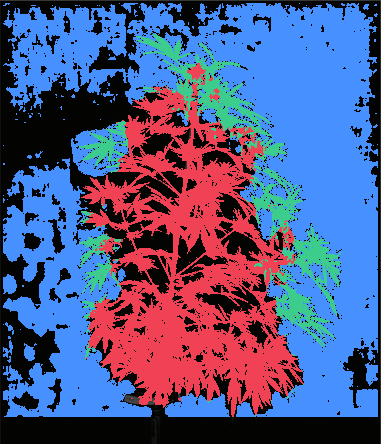
Frozen 381×444 source; compare only under the stated fixed proxy/ROI/threshold diagnostics. The color proxy is not a mask ground truth; these results make no leaf, leaflet, stem, hierarchy, or boundary-accuracy claim.
Same SAM3 checkpoint, not an independent model. Each broad post-hoc region box may contain multiple blades, stem or background. Do not infer tight-exemplar quality, organ accuracy, or a held-out result.
Input SHA-256: 2f338a5ce241e5844cb3bfaa517b611e9b1fc0b87270755a1dc4d9971c53fa7a; device: NVIDIA A40; elapsed: 1.2689 s.
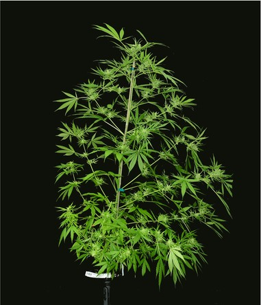
This is a comparison table only; it is not ground truth and does not select an alternative candidate.
| threshold | foreground_coverage | core_coverage | proxy_precision | proxy_iou | definite_background_pixels | predicted_pixels |
|---|---|---|---|---|---|---|
| 0.5000 | 0.3047 | 0.3339 | 0.9826 | 0.3030 | 79 | 13083 |
| 0.2500 | 0.6581 | 0.7080 | 0.9663 | 0.6434 | 437 | 28739 |
| 0.1000 | 0.9151 | 0.9583 | 0.9412 | 0.8656 | 1377 | 41023 |
Normalized box: [0.2664041994750656, 0.3367117117117117, 0.17060367454068243, 0.12387387387387387]; proposals ≥0.1: 66
| threshold | foreground_coverage | core_coverage | proxy_precision | proxy_iou | definite_background_pixels | predicted_pixels |
|---|---|---|---|---|---|---|
| 0.5000 | 0.0192 | 0.0175 | 0.3540 | 0.0185 | 1329 | 2288 |
| 0.2500 | 0.0192 | 0.0175 | 0.3540 | 0.0185 | 1329 | 2288 |
| 0.1000 | 0.2303 | 0.2144 | 0.1155 | 0.0833 | 72961 | 84136 |


Threshold 0.5: upper-left-fan: UL-left=hit, UL-downleft=hit; ROI predicted pixels=1597 | central-overlap: C-short-blade=miss, C-separate-right-blade=miss; ROI predicted pixels=0 | lower-right-drooping-fan: LR-upper-diagonal=miss, LR-down=miss; ROI predicted pixels=0
Threshold 0.25: upper-left-fan: UL-left=hit, UL-downleft=hit; ROI predicted pixels=1597 | central-overlap: C-short-blade=miss, C-separate-right-blade=miss; ROI predicted pixels=0 | lower-right-drooping-fan: LR-upper-diagonal=miss, LR-down=miss; ROI predicted pixels=0
Threshold 0.1: upper-left-fan: UL-left=hit, UL-downleft=hit; ROI predicted pixels=1597 | central-overlap: C-short-blade=miss, C-separate-right-blade=miss; ROI predicted pixels=0 | lower-right-drooping-fan: LR-upper-diagonal=miss, LR-down=miss; ROI predicted pixels=126
Raw files: packed proposals · score map.
Normalized box: [0.45931758530183725, 0.5292792792792793, 0.1889763779527559, 0.18018018018018017]; proposals ≥0.1: 121
| threshold | foreground_coverage | core_coverage | proxy_precision | proxy_iou | definite_background_pixels | predicted_pixels |
|---|---|---|---|---|---|---|
| 0.5000 | 0.0451 | 0.0493 | 0.8106 | 0.0447 | 363 | 2349 |
| 0.2500 | 0.0567 | 0.0614 | 0.8226 | 0.0560 | 409 | 2909 |
| 0.1000 | 0.9853 | 0.9954 | 0.6747 | 0.6680 | 17128 | 61617 |
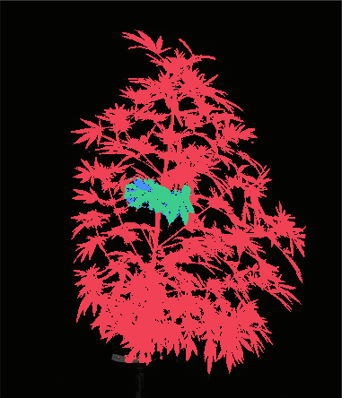
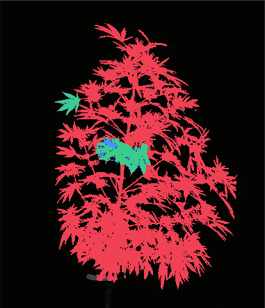
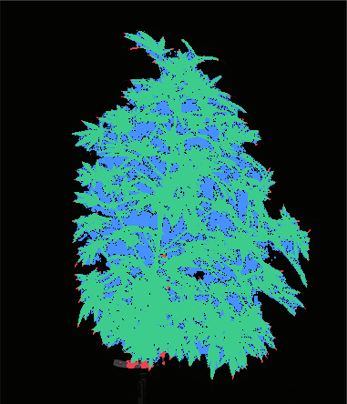
Threshold 0.5: upper-left-fan: UL-left=miss, UL-downleft=miss; ROI predicted pixels=0 | central-overlap: C-short-blade=hit, C-separate-right-blade=hit; ROI predicted pixels=1283 | lower-right-drooping-fan: LR-upper-diagonal=miss, LR-down=miss; ROI predicted pixels=0
Threshold 0.25: upper-left-fan: UL-left=hit, UL-downleft=hit; ROI predicted pixels=560 | central-overlap: C-short-blade=hit, C-separate-right-blade=hit; ROI predicted pixels=1283 | lower-right-drooping-fan: LR-upper-diagonal=miss, LR-down=miss; ROI predicted pixels=0
Threshold 0.1: upper-left-fan: UL-left=hit, UL-downleft=hit; ROI predicted pixels=999 | central-overlap: C-short-blade=hit, C-separate-right-blade=hit; ROI predicted pixels=2545 | lower-right-drooping-fan: LR-upper-diagonal=hit, LR-down=hit; ROI predicted pixels=2291
Raw files: packed proposals · score map.
Normalized box: [0.6863517060367454, 0.8445945945945946, 0.17585301837270342, 0.17117117117117117]; proposals ≥0.1: 127
| threshold | foreground_coverage | core_coverage | proxy_precision | proxy_iou | definite_background_pixels | predicted_pixels |
|---|---|---|---|---|---|---|
| 0.5000 | 0.0744 | 0.0798 | 0.8877 | 0.0737 | 312 | 3535 |
| 0.2500 | 0.9822 | 0.9943 | 0.6602 | 0.6524 | 18337 | 62773 |
| 0.1000 | 0.9866 | 0.9962 | 0.6587 | 0.6529 | 18530 | 63195 |
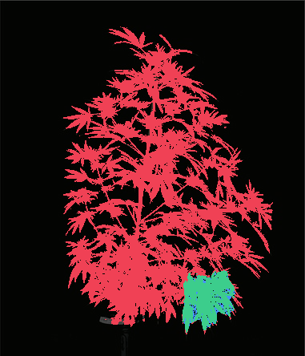
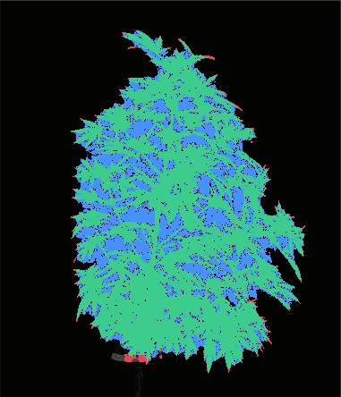
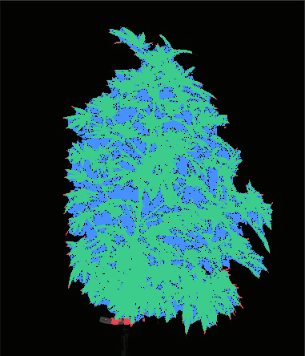
Threshold 0.5: upper-left-fan: UL-left=miss, UL-downleft=miss; ROI predicted pixels=0 | central-overlap: C-short-blade=miss, C-separate-right-blade=miss; ROI predicted pixels=0 | lower-right-drooping-fan: LR-upper-diagonal=hit, LR-down=hit; ROI predicted pixels=2272
Threshold 0.25: upper-left-fan: UL-left=hit, UL-downleft=hit; ROI predicted pixels=1084 | central-overlap: C-short-blade=hit, C-separate-right-blade=hit; ROI predicted pixels=2548 | lower-right-drooping-fan: LR-upper-diagonal=hit, LR-down=hit; ROI predicted pixels=2299
Threshold 0.1: upper-left-fan: UL-left=hit, UL-downleft=hit; ROI predicted pixels=1084 | central-overlap: C-short-blade=hit, C-separate-right-blade=hit; ROI predicted pixels=2548 | lower-right-drooping-fan: LR-upper-diagonal=hit, LR-down=hit; ROI predicted pixels=2299
Raw files: packed proposals · score map.
Oracle-assisted interaction: all six points were selected post-hoc. Each run has one reviewed positive point and one same-region negative point. These are not autonomous prompts or validation labels; predicted IoU is model output, not observed IoU.
Input SHA-256: 2f338a5ce241e5844cb3bfaa517b611e9b1fc0b87270755a1dc4d9971c53fa7a; device: NVIDIA A40; elapsed: 4.6204 s.
The initial point attempt omitted enable_inst_interactivity=True; it was corrected before this completed run. Preserved initial configuration log.
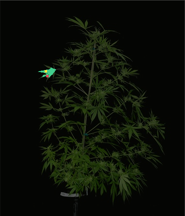
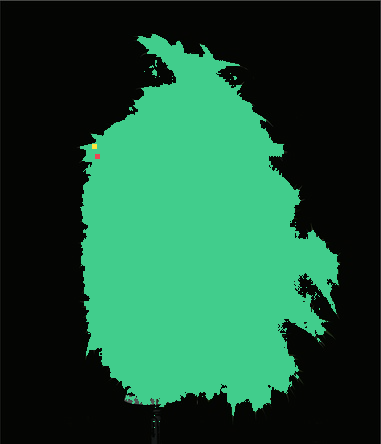
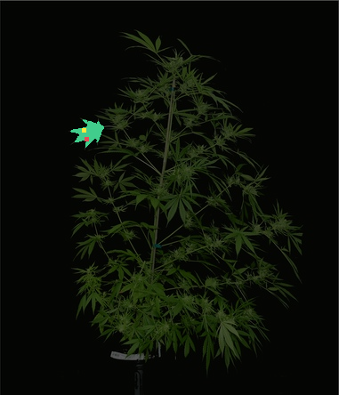
Raw three-mask output, predicted quality, and logits.
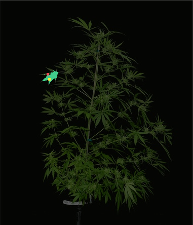
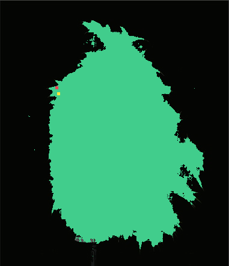
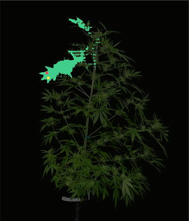
Raw three-mask output, predicted quality, and logits.
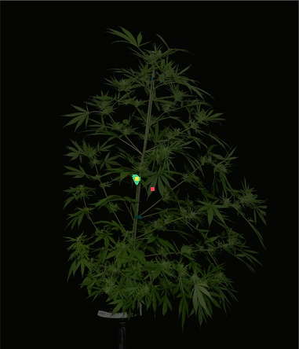
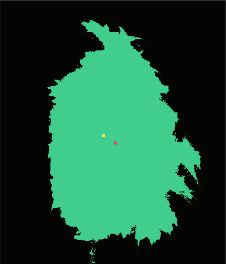
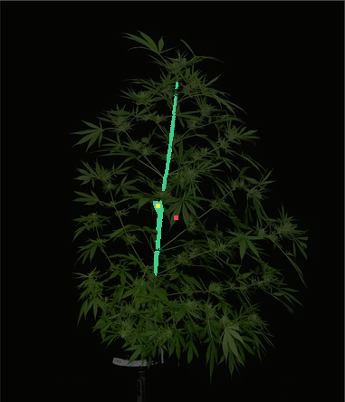
Raw three-mask output, predicted quality, and logits.
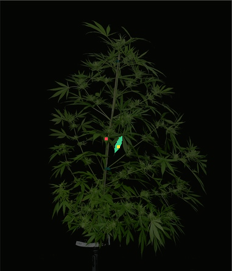
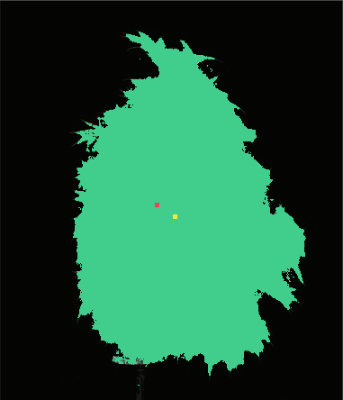
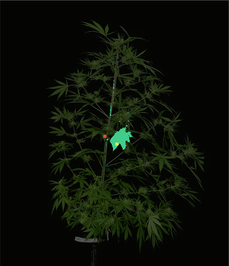
Raw three-mask output, predicted quality, and logits.
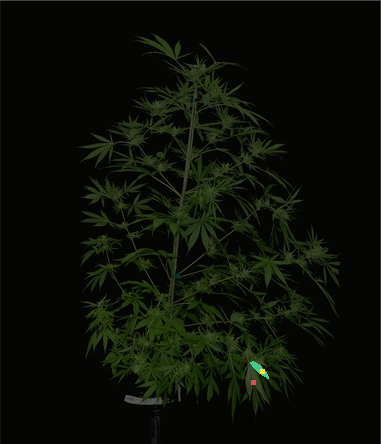
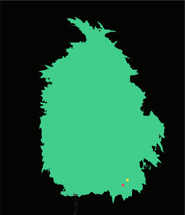
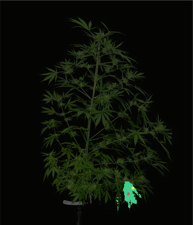
Raw three-mask output, predicted quality, and logits.
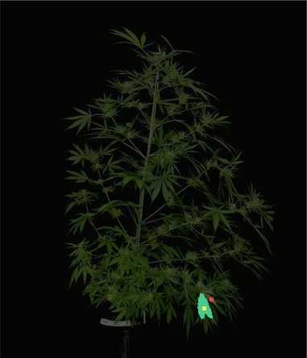
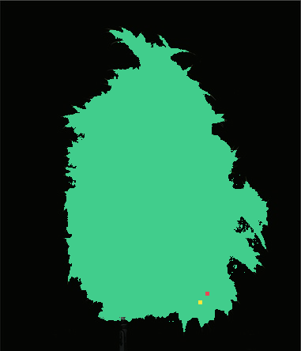
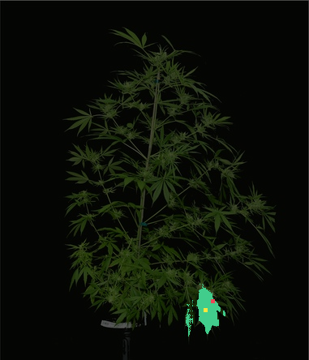